| 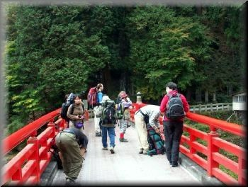 | 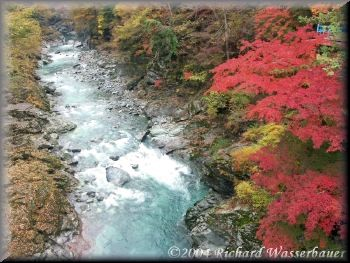 | 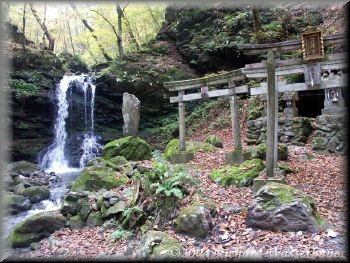 |
| Bridge on Shirakawa river | Shirakawa river with autumn colors | up the ropeway, a waterfall & a shrine |
| 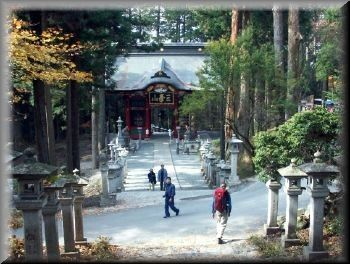 | 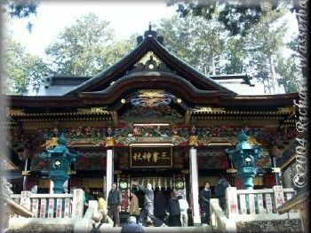 | 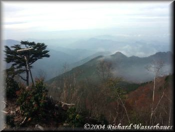 |
| Mitsumine shrine | the main shrine | a view below |
| 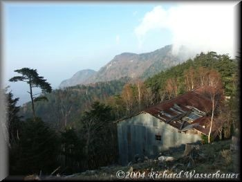 | 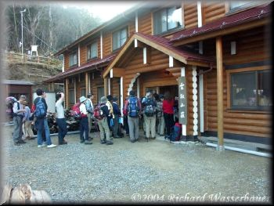 | 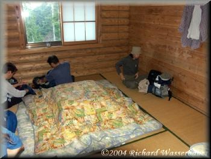 |
| the gathering clouds | queue to enter the "mountain villa" | the villa room (meant for 14 people) |
| 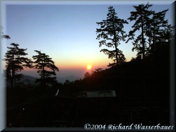 | 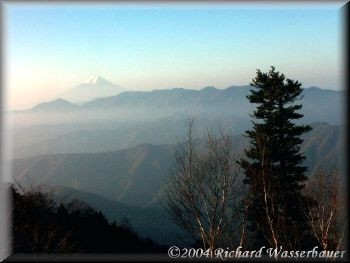 | 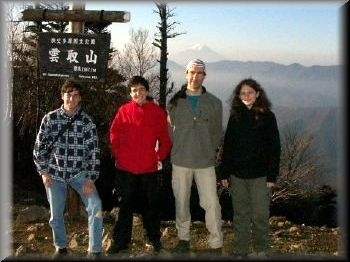 |
| beginning of a promising day | view of Mt. Fuji | At Kumotori peak (with Mt. Fuji behind) |
| 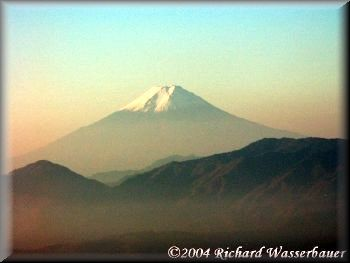 | 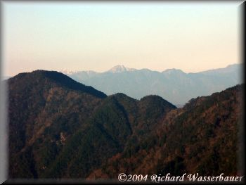 | 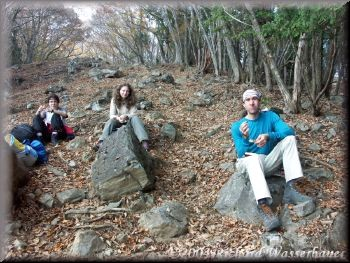 |
| a close up of Mt. Fuji | Mt. Kita-dake in the distance | Lunch break |